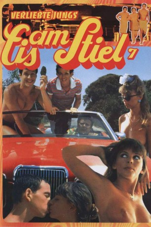

#7991 Eis am Stiel 7 - Verliebte Jungs
Alternativ: Young Love: Lemon Popsicle 7 (Englischer Titel)
 
 IMDB-Wertung: 4.6 / 10
IMDB-Wertung: 4.6 / 10  Metascore: 0
Metascore: 0 
Siebter Teil der Kultfilmreihe "Eis am Stiel". Nachdem die drei Freunde Benji (Yftach Katzur), Momo (Jonathan Sagall) und Yudale (Zachi Noy) eine geliehene Luxuskarre zu Schrott gefahren haben, brauchen sie schnell Geld, um die Reparatur zu zahlen. Den Sommer über arbeiten sie nun in einem Hotel, wo sie sich insbesondere um die weiblichen Gäste kümmern.
Jahr: 1987
Dauer: 78 Minuten
FSK: 12
Land: West-Deutschland Studio: Scotia-CannonTonspuren:
Untertitel:
Auflösung: 1080p (1872x1080) Größe: 6461 MB
Genre: Komödie
Regisseur: Walter Bannert
Drehbuch: Nico Sommer
Soundtrack:
Darsteller:
 Zachi Noy als Yudale / Hughie
Zachi Noy als Yudale / Hughie Yftach Katzur als Benzi
Yftach Katzur als Benzi Jonathan Sagall als Bobby
Jonathan Sagall als Bobby- Leonard Lansink als Schnitzer Jr.
- Sibylle Rauch als Woman with Dog
- Ya'ackov Ben-Sira als Schnitzer sen.
- Sonja Martin als Sandy
- Sissi Pitz als Blondi - Patty
- Eva Astor als Hertha
- Michael Gahr als Alfred
- Linda Caroll als Lili
- Itzhak Aharon als Bodybuilder
- Dorit Adi als Bodybuilder's Friend
- Igor Borisov als Man with Deckchair
- Armon Bismout als Fat Man from Montana
- Meir Almog als Employment Agent
- Gregory Tal als Husband of Woman with Dog
- Dani Shenberger als Young Girl in Montana
- Ronit Golden als Young Girl in Montana
- Inbal Erlich als Young Girl in Car
- Dana Sharon als Young Girl in Car
- Michèle Lasko als Young Girl in Car
- Galit Farber als Young Girl in Revolving Door
- Ada Janklowics als Young Girl on the Beach
- Michal Bar Lev als Young Girl on the Beach
- Tali Goeli als Young Girl on the Beach
- David Danino als Waiter in 'Blue Lagoon'
- Rony Blitz als Mechanic
- Michal Leef als Dancer at the Aquaduct
- Avi Rouveni als Couple in Car
- Maud Ackermann als Sandy Rosenberg (uncredited)
- Judith Brandt als Patty (uncredited)
- Rita Engelmann als Lady with Dog (uncredited)
- Evelyn Gressmann als Hertha (uncredited)
- Jürgen Kluckert als Husband of Woman with Dog (uncredited)
- Franz-Otto Krüger als Receptionist (uncredited)
- Wolfgang Kühne als Bodybuilder (uncredited)
- Tilly Lauenstein als Lili Rosenberg (uncredited)
- Andreas Mannkopff als Schnitzer jun. (uncredited)
- Michael Nowka als Bobby (uncredited)
- Oliver Rohrbeck als Benny (uncredited)
- Wolfgang Spier als Schnitzer sen. (uncredited)
- Joachim Tennstedt als Johnny (uncredited)
Datei: X:\7+mehr(A-Z)\Eis am Stiel\Eis am Stiel 7 - Verliebte Jungs (1987, FSK12, 1872x1080).mkv seit 09.01.2018
Festplatte: HD Collection-7+mehr(A-Z)+Person
 Es gibt insgesamt 11 Filme in der Gruppe '7+mehr(A-Z)\Eis am Stiel'
Es gibt insgesamt 11 Filme in der Gruppe '7+mehr(A-Z)\Eis am Stiel'